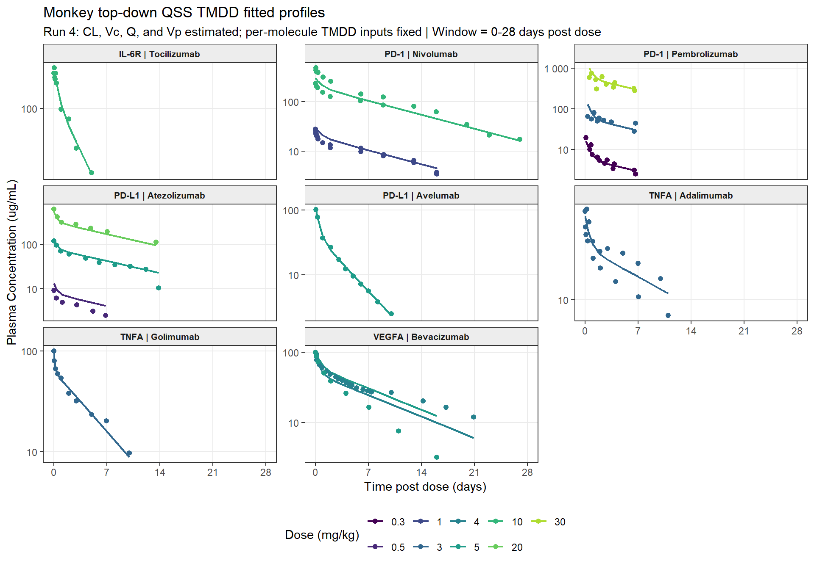

rm(list = ls())
library(tidyverse)
library(data.table)
library(scales)
library(openxlsx)
library(knitr)
library(kableExtra)
library(nlmixr2)
library(rxode2)
library(nlmixr2lib)
datadir <- if (dir.exists("../../01_Data")) "../../01_Data" else "01_Data"
outdir <- if (dir.exists("../SimsOutputs") || dir.exists("../Scripts")) "../SimsOutputs/" else "04_TopDown/SimsOutputs/"
dir.create(outdir, recursive = TRUE, showWarnings = FALSE)
figures_dir <- file.path(outdir, "Figures")
dir.create(figures_dir, recursive = TRUE, showWarnings = FALSE)
AUC_END_H <- 28 * 24
PROFILE_TIMEPOINTS_H <- c(0, 0.25, 1, 2, 4, 6, 12, 24, 48, 96, 168, 336, 504)
BW_MONKEY_KG <- 3.5
FORCE_RERUN <- FALSE
run4_cache_path <- file.path(outdir, "TopDownTMDD_Run4_CL_Vc_Q_Vp_fixed_TMDD_Monkey.rds")
RUN4_WARM_START <- if (file.exists(run4_cache_path)) readRDS(run4_cache_path) else NULL
normalize_names <- function(x) {
x %>%
str_replace_all("\\.+", ".") %>%
str_replace_all("\\s+", ".") %>%
str_replace_all("\\[", "") %>%
str_replace_all("\\]", "") %>%
str_replace_all("\\(", "") %>%
str_replace_all("\\)", "")
}
normalize_species <- function(x) {
case_when(
str_to_lower(x) %in% c("nhp", "monkey", "cynomolgus monkey") ~ "Monkey",
TRUE ~ str_to_title(x)
)
}
unit_to_hour <- function(time, unit) {
unit_l <- str_to_lower(str_trim(unit))
case_when(
unit_l %in% c("h", "hr", "hrs", "hour", "hours") ~ as.numeric(time),
unit_l %in% c("min", "mins", "minute", "minutes") ~ as.numeric(time) / 60,
unit_l %in% c("day", "days", "d") ~ as.numeric(time) * 24,
TRUE ~ as.numeric(time)
)
}
conc_ugml_to_nm <- function(conc_ugml, mw_g_mol) {
as.numeric(conc_ugml) * 1e6 / as.numeric(mw_g_mol)
}
conc_nm_to_ugml <- function(conc_nm, mw_g_mol) {
as.numeric(conc_nm) * as.numeric(mw_g_mol) / 1e6
}
dose_mgkg_to_nmolkg <- function(dose_mgkg, mw_g_mol) {
as.numeric(dose_mgkg) * 1e6 / as.numeric(mw_g_mol)
}
convert_rate_to_h <- function(value, unit) {
unit_l <- str_to_lower(str_trim(unit))
case_when(
unit_l %in% c("1/min", "min^-1", "1/minute") ~ as.numeric(value) * 60,
TRUE ~ as.numeric(value)
)
}
convert_kd_to_nm <- function(value, unit) {
unit_l <- str_to_lower(str_trim(unit))
unit_l <- str_replace_all(unit_l, "[^[:ascii:]]", "u")
case_when(
unit_l %in% c("um", "umol/l", "umol/litre", "umol/liter", "umol/l") ~ as.numeric(value) * 1000,
unit_l %in% c("nm", "nmol/l", "nmol/litre", "nmol/liter") ~ as.numeric(value),
TRUE ~ as.numeric(value)
)
}
bounded_start <- function(x, default, lower, upper) {
x <- suppressWarnings(as.numeric(x))
x[!is.finite(x) | x <= 0] <- default
pmin(pmax(x, lower), upper)
}
run_result_path <- function(run_name) {
file.path(outdir, paste0("TopDownTMDD_", run_name, "_Monkey.rds"))
}
fit_or_read_run <- function(run_name, fit_expr, force = FORCE_RERUN) {
result_file <- run_result_path(run_name)
if (file.exists(result_file) && !isTRUE(force)) {
message("Reading cached ", run_name, " results from ", result_file)
return(readRDS(result_file))
}
result <- force(fit_expr)
saveRDS(result, result_file)
message("Saved ", run_name, " results to ", result_file)
result
}
terminal_lambda_z <- function(time_h, conc) {
df <- tibble(time_h = as.numeric(time_h), conc = as.numeric(conc)) %>%
filter(is.finite(time_h), is.finite(conc), conc > 0) %>%
arrange(time_h)
if (nrow(df) < 3) return(NA_real_)
tail_df <- tail(df, min(4, nrow(df)))
fit <- tryCatch(lm(log(conc) ~ time_h, data = tail_df), error = function(e) NULL)
if (is.null(fit)) return(NA_real_)
lambda <- -unname(coef(fit)[["time_h"]])
if (!is.finite(lambda) || lambda <= 0) NA_real_ else lambda
}
trapz_auc <- function(time, conc, t_end = Inf) {
keep <- !is.na(time) & !is.na(conc) & conc > 0 & time <= t_end
t <- as.numeric(time[keep])
c <- as.numeric(conc[keep])
if (length(t) < 2) return(NA_real_)
ord <- order(t)
t <- t[ord]
c <- c[ord]
dt <- diff(t)
c1 <- c[-length(c)]
c2 <- c[-1]
use_log <- c1 != c2 & c1 > 0 & c2 > 0
sum(ifelse(use_log, dt * (c1 - c2) / log(c1 / c2), dt * (c1 + c2) / 2))
}
mean_or_na <- function(x) {
x <- x[is.finite(x)]
if (length(x) == 0) NA_real_ else mean(x)
}
best_terminal_lambda_z <- function(time_h, conc, min_points = 3L) {
terminal_data <- tibble(time_h = as.numeric(time_h), conc = as.numeric(conc)) %>%
filter(is.finite(time_h), is.finite(conc), conc > 0) %>%
group_by(time_h) %>%
summarise(conc = mean(conc), .groups = "drop") %>%
arrange(time_h)
if (nrow(terminal_data) < min_points) return(NA_real_)
tmax_index <- which.max(terminal_data$conc)[1]
post_cmax <- terminal_data %>% slice((tmax_index + 1L):n())
if (nrow(post_cmax) < min_points) post_cmax <- terminal_data %>% slice(tmax_index:n())
if (nrow(post_cmax) < min_points) return(NA_real_)
x <- post_cmax$time_h
y <- log(post_cmax$conc)
total_n <- length(x)
suffix_sum <- function(z) rev(cumsum(rev(z)))
sx <- suffix_sum(x)
sy <- suffix_sum(y)
sxx <- suffix_sum(x * x)
syy <- suffix_sum(y * y)
sxy <- suffix_sum(x * y)
terminal_n <- seq.int(min_points, total_n)
start_index <- total_n - terminal_n + 1L
s_xx <- sxx[start_index] - sx[start_index]^2 / terminal_n
s_yy <- syy[start_index] - sy[start_index]^2 / terminal_n
s_xy <- sxy[start_index] - sx[start_index] * sy[start_index] / terminal_n
slope <- s_xy / s_xx
r2 <- pmin(pmax((s_xy^2) / (s_xx * s_yy), 0), 1)
adj_r2 <- 1 - (1 - r2) * (terminal_n - 1) / (terminal_n - 2)
candidates <- tibble(slope, adj_r2, terminal_n) %>%
filter(is.finite(slope), slope < 0, is.finite(adj_r2)) %>%
arrange(desc(adj_r2), desc(terminal_n))
if (nrow(candidates) == 0) NA_real_ else -candidates$slope[1]
}
auc_inf_ug_h_ml <- function(time_h, conc, lambda_z) {
profile <- tibble(time_h = as.numeric(time_h), conc = as.numeric(conc)) %>%
filter(
is.finite(time_h), is.finite(conc),
time_h >= 0, time_h <= AUC_END_H, conc >= 0
) %>%
group_by(time_h) %>%
summarise(conc = mean(conc), .groups = "drop") %>%
arrange(time_h)
if (nrow(profile) == 0 || !any(profile$conc > 0) || !is.finite(lambda_z)) {
return(NA_real_)
}
if (!any(profile$time_h == 0)) {
profile <- bind_rows(tibble(time_h = 0, conc = 0), profile) %>% arrange(time_h)
}
positive <- profile %>% filter(conc > 0)
last_index <- which.max(positive$time_h)
c_last <- positive$conc[last_index]
last_time <- positive$time_h[last_index]
through_last <- profile %>% filter(time_h <= last_time)
dt <- diff(through_last$time_h)
c1 <- through_last$conc[-nrow(through_last)]
c2 <- through_last$conc[-1]
declining <- c2 < c1 & c1 > 0 & c2 > 0
auc_last <- sum(ifelse(
declining,
dt * (c1 - c2) / log(c1 / c2),
dt * (c1 + c2) / 2
))
auc_last + c_last / lambda_z
}
terminal_clearance_l_day <- function(dose_mg_kg, body_weight_kg, auc_inf) {
if (!is.finite(auc_inf) || auc_inf <= 0) return(NA_real_)
24 * dose_mg_kg * body_weight_kg / auc_inf
}
evaluate_profile_timepoints <- function(time_h, conc) {
profile <- tibble(time_h = as.numeric(time_h), conc = as.numeric(conc)) %>%
filter(is.finite(time_h), is.finite(conc), time_h >= 0, conc >= 0) %>%
group_by(time_h) %>%
summarise(conc = mean(conc), .groups = "drop") %>%
arrange(time_h)
if (nrow(profile) == 0) {
return(tibble(Eval_Time_h = PROFILE_TIMEPOINTS_H, Eval_Conc_ug_mL = NA_real_))
}
if (!any(profile$time_h == 0)) {
profile <- bind_rows(tibble(time_h = 0, conc = 0), profile) %>% arrange(time_h)
}
interpolate_one <- function(target_h) {
exact <- which(abs(profile$time_h - target_h) < 1e-10)
if (length(exact) > 0) return(profile$conc[exact[1]])
if (target_h < min(profile$time_h) || target_h > max(profile$time_h)) return(NA_real_)
lower <- max(which(profile$time_h < target_h))
upper <- min(which(profile$time_h > target_h))
fraction <- (target_h - profile$time_h[lower]) /
(profile$time_h[upper] - profile$time_h[lower])
c1 <- profile$conc[lower]
c2 <- profile$conc[upper]
if (c1 > 0 && c2 > 0) {
exp(log(c1) + fraction * (log(c2) - log(c1)))
} else {
c1 + fraction * (c2 - c1)
}
}
tibble(
Eval_Time_h = PROFILE_TIMEPOINTS_H,
Eval_Conc_ug_mL = map_dbl(PROFILE_TIMEPOINTS_H, interpolate_one)
)
}
fmt_fe <- function(x) {
cell_spec(
ifelse(is.na(x), "", formatC(x, format = "f", digits = 2)),
background = ifelse(!is.na(x) & x >= 0.5 & x <= 2, "#d4edda", "#f8d7da"),
color = ifelse(!is.na(x) & x >= 0.5 & x <= 2, "#155724", "#721c24"),
bold = TRUE
)
}
safe_ofv <- function(fit) {
candidates <- list(
quote(fit$objf),
quote(fit$objective),
quote(fit$OBJF),
quote(fit$ofv)
)
for (expr in candidates) {
val <- tryCatch(eval(expr), error = function(e) NULL)
if (!is.null(val) && length(val) > 0 && is.finite(as.numeric(val)[1])) {
return(as.numeric(val)[1])
}
}
NA_real_
}
if (.Platform$OS.type == "windows" && identical(unname(Sys.which("make")), "")) {
warning(
"Rtools/make was not found on PATH. nlmixr2/rxode2 model compilation may fail; ",
"run nlmixr2::nlmixr2CheckInstall() if Run4 reports rxode2 compile errors.",
call. = FALSE
)
}Top-down QSS TMDD fits for monkey IV PK
Set up
Read data and parameters
obs_raw <- read.csv(
file.path(datadir, "Monkey", "mAb_data_clean.csv"),
stringsAsFactors = FALSE,
check.names = FALSE
)
names(obs_raw) <- normalize_names(names(obs_raw))
param_raw <- read.xlsx(file.path(datadir, "Monkey", "Parameters.xlsx"), sheet = "Included")
names(param_raw) <- normalize_names(names(param_raw))
included_molecules <- unique(param_raw$Drug.Name)
obs_points <- obs_raw %>%
transmute(
Study.Id = as.character(.data[["Study.Id"]]),
Subject.Id = coalesce(
na_if(as.character(.data[["Subject.Id"]]), "."),
na_if(as.character(.data[["Group.Id"]]), "."),
as.character(.data[["Study.Id"]])
),
Species = normalize_species(.data[["Species"]]),
Dose = as.numeric(.data[["Dose"]]),
Molecule = .data[["Molecule"]],
MW = as.numeric(.data[["Molecular.Weight"]]),
Time_h = unit_to_hour(.data[["Time"]], .data[["Time.unit"]]),
Conc_ugmL = as.numeric(.data[["Measurement"]]),
Conc_unit = .data[["Measurement.unit"]],
Route = .data[["Route"]]
) %>%
filter(
Species == "Monkey",
Molecule %in% included_molecules,
Route %in% c("IV", "IV Bolus"),
str_to_lower(Conc_unit) %in% c("ug/ml", "microgram/ml", "micrograms/ml"),
!is.na(Time_h),
!is.na(Conc_ugmL),
Conc_ugmL > 0
) %>%
mutate(
Profile = paste(Molecule, Dose, Subject.Id, Study.Id, sep = "_"),
ID = as.integer(factor(Profile)),
DV = conc_ugml_to_nm(Conc_ugmL, MW)
)
obs <- obs_points %>%
group_by(Molecule, Species, Dose, MW, Time_h) %>%
summarise(
Conc_ugmL = median(Conc_ugmL, na.rm = TRUE),
DV = median(DV, na.rm = TRUE),
n_points = n(),
.groups = "drop"
) %>%
arrange(Molecule, Dose, Time_h) %>%
mutate(
Study.Id = "Median_by_molecule_dose_time",
Subject.Id = paste(Molecule, Dose, "median", sep = "_"),
Route = "IV",
Profile = paste(Molecule, Dose, sep = "_"),
ID = as.integer(factor(Profile))
) %>%
select(
Study.Id, Subject.Id, Species, Dose, Molecule, MW, Time_h,
Conc_ugmL, Route, Profile, ID, DV, n_points
)
stopifnot(length(unique(obs$Molecule)) == 8)
params <- param_raw %>%
transmute(
Molecule = .data[["Drug.Name"]],
Target = .data[["Target.Name"]],
Parameter = .data[["Parameter.Name.in.PK-Sim"]],
Value = as.numeric(.data[["Value.from.Source"]]),
Unit = .data[["Unit"]],
Source = .data[["Source"]]
) %>%
filter(Molecule %in% unique(obs$Molecule)) %>%
mutate(
parameter_key = case_when(
str_detect(str_to_lower(Parameter), "^kd$") ~ "kd_nm",
str_to_lower(Parameter) == "koff" ~ "koff_h",
str_to_lower(Parameter) == "kint" ~ "kint_h",
str_to_lower(Parameter) == "kdeg" ~ "kdeg_h",
str_to_lower(Parameter) == "reference concentration" ~ "ref_nm",
TRUE ~ NA_character_
),
unit_for_conversion = case_when(
parameter_key == "koff_h" &
!coalesce(str_detect(str_to_lower(Unit), "1/|min|h|hour"), FALSE) ~ "1/min",
TRUE ~ Unit
),
value_std = case_when(
parameter_key == "kd_nm" ~ convert_kd_to_nm(Value, Unit),
parameter_key == "ref_nm" ~ convert_kd_to_nm(Value, Unit),
parameter_key == "koff_h" ~ convert_rate_to_h(Value, unit_for_conversion),
parameter_key %in% c("kint_h", "kdeg_h") ~ convert_rate_to_h(Value, Unit),
TRUE ~ NA_real_
)
) %>%
filter(!is.na(parameter_key)) %>%
select(Molecule, Target, parameter_key, value_std) %>%
pivot_wider(names_from = parameter_key, values_from = value_std) %>%
mutate(
kon_inv_nmh = koff_h / kd_nm,
kss_qss_nm = (koff_h + kint_h) / kon_inv_nmh,
MW = map_dbl(Molecule, ~ unique(obs$MW[obs$Molecule == .x])[1])
)
unit_audit <- param_raw %>%
transmute(
Molecule = .data[["Drug.Name"]],
Parameter = .data[["Parameter.Name.in.PK-Sim"]],
Value = as.numeric(.data[["Value.from.Source"]]),
Unit = .data[["Unit"]]
) %>%
filter(
Molecule %in% unique(obs$Molecule),
Parameter %in% c("Kd", "koff", "kint", "kdeg")
) %>%
left_join(
params %>%
select(Molecule, kd_nm, koff_h, kint_h, kdeg_h, kon_inv_nmh, kss_qss_nm),
by = "Molecule"
)
knitr::kable(params, digits = 4, caption = "Fixed monkey TMDD inputs used by the top-down fits")| Molecule | Target | kd_nm | koff_h | kint_h | ref_nm | kdeg_h | kon_inv_nmh | kss_qss_nm | MW |
|---|---|---|---|---|---|---|---|---|---|
| Atezolizumab | PD-L1 | 299.0000 | 0.5616 | 0.606 | 0.6090 | 0.0426 | 0.0019 | 621.6389 | 144000 |
| Avelumab | PD-L1 | 0.0467 | 0.1044 | 0.250 | 0.6090 | 0.0426 | 2.2355 | 0.1585 | 147000 |
| Nivolumab | PD-1 | 1.4500 | 6.8400 | 0.027 | 0.0166 | 0.0270 | 4.7172 | 1.4557 | 146000 |
| Pembrolizumab | PD-1 | 0.3100 | 0.1020 | 0.027 | 0.0166 | 0.0270 | 0.3290 | 0.3921 | 146000 |
| Bevacizumab | VEGFA | 0.0580 | 0.1116 | 0.480 | 0.0130 | 0.4800 | 1.9241 | 0.3075 | 150000 |
| Tocilizumab | IL-6R | 1.3400 | 0.7704 | 0.280 | 2.2000 | 0.2800 | 0.5749 | 1.8270 | 148000 |
| Adalimumab | TNFA | 0.1270 | 0.5760 | 0.866 | 0.0010 | 0.2230 | 4.5354 | 0.3179 | 148000 |
| Golimumab | TNFA | 0.0180 | 0.3350 | 0.866 | 0.0010 | 0.2230 | 18.6100 | 0.0645 | 150000 |
knitr::kable(unit_audit, digits = 4, caption = "Unit conversion audit for TMDD input parameters")| Molecule | Parameter | Value | Unit | kd_nm | koff_h | kint_h | kdeg_h | kon_inv_nmh | kss_qss_nm |
|---|---|---|---|---|---|---|---|---|---|
| Atezolizumab | Kd | 0.2990 | uM | 299.0000 | 0.5616 | 0.606 | 0.0426 | 0.0019 | 621.6389 |
| Atezolizumab | koff | 0.0094 | 1/min | 299.0000 | 0.5616 | 0.606 | 0.0426 | 0.0019 | 621.6389 |
| Atezolizumab | kint | 0.6060 | 1/h | 299.0000 | 0.5616 | 0.606 | 0.0426 | 0.0019 | 621.6389 |
| Atezolizumab | kdeg | 0.0426 | 1/h | 299.0000 | 0.5616 | 0.606 | 0.0426 | 0.0019 | 621.6389 |
| Avelumab | Kd | 0.0000 | uM | 0.0467 | 0.1044 | 0.250 | 0.0426 | 2.2355 | 0.1585 |
| Avelumab | koff | 0.0017 | 1/min | 0.0467 | 0.1044 | 0.250 | 0.0426 | 2.2355 | 0.1585 |
| Avelumab | kint | 0.2500 | 1/h | 0.0467 | 0.1044 | 0.250 | 0.0426 | 2.2355 | 0.1585 |
| Avelumab | kdeg | 0.0426 | 1/h | 0.0467 | 0.1044 | 0.250 | 0.0426 | 2.2355 | 0.1585 |
| Nivolumab | Kd | 0.0014 | uM | 1.4500 | 6.8400 | 0.027 | 0.0270 | 4.7172 | 1.4557 |
| Nivolumab | koff | 0.1140 | uM | 1.4500 | 6.8400 | 0.027 | 0.0270 | 4.7172 | 1.4557 |
| Nivolumab | kint | 0.0270 | 1/h | 1.4500 | 6.8400 | 0.027 | 0.0270 | 4.7172 | 1.4557 |
| Nivolumab | kdeg | 0.0270 | 1/h | 1.4500 | 6.8400 | 0.027 | 0.0270 | 4.7172 | 1.4557 |
| Pembrolizumab | Kd | 0.0003 | uM | 0.3100 | 0.1020 | 0.027 | 0.0270 | 0.3290 | 0.3921 |
| Pembrolizumab | koff | 0.0017 | 1/min | 0.3100 | 0.1020 | 0.027 | 0.0270 | 0.3290 | 0.3921 |
| Pembrolizumab | kint | 0.0270 | NA | 0.3100 | 0.1020 | 0.027 | 0.0270 | 0.3290 | 0.3921 |
| Pembrolizumab | kdeg | 0.0270 | 1/h | 0.3100 | 0.1020 | 0.027 | 0.0270 | 0.3290 | 0.3921 |
| Bevacizumab | Kd | 0.0001 | uM | 0.0580 | 0.1116 | 0.480 | 0.4800 | 1.9241 | 0.3075 |
| Bevacizumab | koff | 0.0019 | 1/min | 0.0580 | 0.1116 | 0.480 | 0.4800 | 1.9241 | 0.3075 |
| Bevacizumab | kint | 0.4800 | 1/h | 0.0580 | 0.1116 | 0.480 | 0.4800 | 1.9241 | 0.3075 |
| Bevacizumab | kdeg | 0.4800 | 1/h | 0.0580 | 0.1116 | 0.480 | 0.4800 | 1.9241 | 0.3075 |
| Tocilizumab | Kd | 0.0013 | uM | 1.3400 | 0.7704 | 0.280 | 0.2800 | 0.5749 | 1.8270 |
| Tocilizumab | koff | 0.0128 | 1/min | 1.3400 | 0.7704 | 0.280 | 0.2800 | 0.5749 | 1.8270 |
| Tocilizumab | kint | 0.2800 | 1/h | 1.3400 | 0.7704 | 0.280 | 0.2800 | 0.5749 | 1.8270 |
| Tocilizumab | kdeg | 0.2800 | 1/h | 1.3400 | 0.7704 | 0.280 | 0.2800 | 0.5749 | 1.8270 |
| Adalimumab | Kd | 0.0001 | uM | 0.1270 | 0.5760 | 0.866 | 0.2230 | 4.5354 | 0.3179 |
| Adalimumab | koff | 0.0096 | 1/min | 0.1270 | 0.5760 | 0.866 | 0.2230 | 4.5354 | 0.3179 |
| Adalimumab | kint | 0.8660 | 1/h | 0.1270 | 0.5760 | 0.866 | 0.2230 | 4.5354 | 0.3179 |
| Adalimumab | kdeg | 0.2230 | 1/h | 0.1270 | 0.5760 | 0.866 | 0.2230 | 4.5354 | 0.3179 |
| Golimumab | Kd | 0.0000 | uM | 0.0180 | 0.3350 | 0.866 | 0.2230 | 18.6100 | 0.0645 |
| Golimumab | koff | 0.0056 | 1/min | 0.0180 | 0.3350 | 0.866 | 0.2230 | 18.6100 | 0.0645 |
| Golimumab | kint | 0.8660 | 1/h | 0.0180 | 0.3350 | 0.866 | 0.2230 | 18.6100 | 0.0645 |
| Golimumab | kdeg | 0.2230 | 1/h | 0.0180 | 0.3350 | 0.866 | 0.2230 | 18.6100 | 0.0645 |
obs %>%
count(Molecule, Dose, ID, name = "n_time_points") %>%
arrange(Molecule, Dose) %>%
knitr::kable(caption = "Median monkey single-dose IV profiles used for fitting after resetting IDs")| Molecule | Dose | ID | n_time_points |
|---|---|---|---|
| Adalimumab | 3.0 | 1 | 17 |
| Atezolizumab | 0.5 | 2 | 6 |
| Atezolizumab | 5.0 | 4 | 10 |
| Atezolizumab | 20.0 | 3 | 7 |
| Avelumab | 5.0 | 5 | 11 |
| Bevacizumab | 4.0 | 6 | 20 |
| Bevacizumab | 5.0 | 7 | 9 |
| Golimumab | 3.0 | 8 | 10 |
| Nivolumab | 1.0 | 9 | 19 |
| Nivolumab | 10.0 | 10 | 20 |
| Pembrolizumab | 0.3 | 11 | 12 |
| Pembrolizumab | 3.0 | 12 | 9 |
| Pembrolizumab | 30.0 | 13 | 10 |
| Tocilizumab | 10.0 | 14 | 10 |
obs %>%
distinct(Molecule, Dose, ID, MW) %>%
transmute(
Molecule,
Dose_mg_kg = Dose,
ID,
Dose_events_per_ID = 1L,
Dose_time_h = 0,
Dose_nmol_kg = dose_mgkg_to_nmolkg(Dose, MW)
) %>%
arrange(Molecule, Dose_mg_kg) %>%
knitr::kable(digits = 4, caption = "Single-dose IV event audit: one dose at time zero per molecule-dose profile")| Molecule | Dose_mg_kg | ID | Dose_events_per_ID | Dose_time_h | Dose_nmol_kg |
|---|---|---|---|---|---|
| Adalimumab | 3.0 | 1 | 1 | 0 | 20.2703 |
| Atezolizumab | 0.5 | 2 | 1 | 0 | 3.4722 |
| Atezolizumab | 5.0 | 4 | 1 | 0 | 34.7222 |
| Atezolizumab | 20.0 | 3 | 1 | 0 | 138.8889 |
| Avelumab | 5.0 | 5 | 1 | 0 | 34.0136 |
| Bevacizumab | 4.0 | 6 | 1 | 0 | 26.6667 |
| Bevacizumab | 5.0 | 7 | 1 | 0 | 33.5570 |
| Golimumab | 3.0 | 8 | 1 | 0 | 20.0000 |
| Nivolumab | 1.0 | 9 | 1 | 0 | 6.8493 |
| Nivolumab | 10.0 | 10 | 1 | 0 | 68.4932 |
| Pembrolizumab | 0.3 | 11 | 1 | 0 | 2.0548 |
| Pembrolizumab | 3.0 | 12 | 1 | 0 | 20.5479 |
| Pembrolizumab | 30.0 | 13 | 1 | 0 | 205.4795 |
| Tocilizumab | 10.0 | 14 | 1 | 0 | 67.5676 |
profile_starts <- obs %>%
group_by(Molecule, Dose, MW) %>%
summarise(
dose_nmolkg = dose_mgkg_to_nmolkg(first(Dose), first(MW)),
cmax_nm = max(DV, na.rm = TRUE),
lambda_z_h = terminal_lambda_z(Time_h, DV),
vc_lkg = dose_nmolkg / cmax_nm,
cl_lhkg = lambda_z_h * vc_lkg,
.groups = "drop"
)
initial_estimates <- profile_starts %>%
group_by(Molecule) %>%
summarise(
lcl_init = log(bounded_start(median(cl_lhkg, na.rm = TRUE), 0.01, 1e-4, 0.2)),
lvc_init = log(bounded_start(median(vc_lkg, na.rm = TRUE), 0.05, 0.005, 0.5)),
lq_init = log(bounded_start(median(cl_lhkg, na.rm = TRUE) * 0.5, 0.005, 1e-5, 0.2)),
lvp_init = log(bounded_start(median(vc_lkg, na.rm = TRUE) * 1.5, 0.08, 0.005, 1.0)),
add_err_init = bounded_start(0.05 * median(cmax_nm, na.rm = TRUE), 0.5, 1e-4, 1000),
.groups = "drop"
) %>%
left_join(params %>% select(Molecule, ref_nm, kdeg_h), by = "Molecule") %>%
mutate(
lr0_init = log(bounded_start(ref_nm, 0.1, 1e-5, 1e4)),
lkdeg_init = log(bounded_start(kdeg_h, 0.03, 1e-5, 10)),
prop_err_init = 0.12,
CL_init_L_h_kg = exp(lcl_init),
Vc_init_L_kg = exp(lvc_init),
Q_init_L_h_kg = exp(lq_init),
Vp_init_L_kg = exp(lvp_init),
Rtot_init_nM = exp(lr0_init),
kdeg_init_h = exp(lkdeg_init)
)
initial_estimates %>%
select(
Molecule, CL_init_L_h_kg, Vc_init_L_kg, Q_init_L_h_kg, Vp_init_L_kg,
Rtot_init_nM, kdeg_init_h, prop_err_init, add_err_init
) %>%
knitr::kable(digits = 4, caption = "Data-driven initial estimates used by nlmixr2")| Molecule | CL_init_L_h_kg | Vc_init_L_kg | Q_init_L_h_kg | Vp_init_L_kg | Rtot_init_nM | kdeg_init_h | prop_err_init | add_err_init |
|---|---|---|---|---|---|---|---|---|
| Adalimumab | 2e-04 | 0.0378 | 1e-04 | 0.0568 | 0.0010 | 0.2230 | 0.12 | 26.7872 |
| Atezolizumab | 3e-04 | 0.0421 | 1e-04 | 0.0631 | 0.6090 | 0.0426 | 0.12 | 41.2500 |
| Avelumab | 6e-04 | 0.0489 | 3e-04 | 0.0734 | 0.6090 | 0.0426 | 0.12 | 34.7585 |
| Bevacizumab | 2e-04 | 0.0461 | 1e-04 | 0.0691 | 0.0130 | 0.4800 | 0.12 | 32.5969 |
| Golimumab | 2e-04 | 0.0298 | 1e-04 | 0.0447 | 0.0010 | 0.2230 | 0.12 | 33.5767 |
| Nivolumab | 2e-04 | 0.0284 | 1e-04 | 0.0425 | 0.0166 | 0.0270 | 0.12 | 87.0908 |
| Pembrolizumab | 1e-04 | 0.0376 | 1e-04 | 0.0563 | 0.0166 | 0.0270 | 0.12 | 27.3562 |
| Tocilizumab | 6e-04 | 0.0474 | 3e-04 | 0.0711 | 2.2000 | 0.2800 | 0.12 | 71.2889 |
TMDD QSS model helpers
The QSS model follows the two-compartment QSS TMDD form used in the Pumas and Monolix examples: central drug is treated as total ligand, total target is an ODE state, and free ligand/free target/complex are computed algebraically. Concentration-bearing quantities are in nM, time is in hours, amount is nmol/kg, and volume/clearance are weight-normalized.
For this top-down exercise, the target baseline is estimated as Rtot. Target synthesis is handled explicitly as:
ksyn = Rtot * kdeg_target.
The QSS binding constant is fixed from the in vitro kinetic inputs:
Kss = (koff + kint) / kon, where kon = koff / KD.
Runs 1-3 are retained below for reference but are not evaluated. Run 4 estimates the structural PK terms CL, Vc, Q, and Vp, together with the proportional and additive residual-error terms. All TMDD parameters are fixed per molecule to the parameter workbook values, including Rtot (the reference concentration), kdeg_target, and kint.
make_fit_data <- function(dat) {
dat_obs <- dat %>%
arrange(ID, Time_h) %>%
transmute(
ID,
TIME = Time_h,
DV,
AMT = NA_real_,
EVID = 0,
CMT = "centr",
Molecule,
Dose,
MW
)
dose_records <- dat %>%
distinct(ID, Molecule, Dose, MW) %>%
transmute(
ID,
TIME = 0,
DV = NA_real_,
AMT = dose_mgkg_to_nmolkg(Dose, MW),
EVID = 1,
CMT = "centr",
Molecule,
Dose,
MW
)
bind_rows(dose_records, dat_obs) %>%
arrange(ID, TIME, desc(EVID)) %>%
as.data.frame()
}
build_qss_model <- function(kd_nm, kon_inv_nmh, kint_h, kdeg_h = NULL, kss_nm = NULL, estimate_kdeg = FALSE, init = NULL) {
kd_nm <- signif(as.numeric(kd_nm), 8)
kon_inv_nmh <- signif(as.numeric(kon_inv_nmh), 8)
kint_h <- signif(as.numeric(kint_h), 8)
kdeg_h <- signif(as.numeric(kdeg_h), 8)
kss_nm <- signif(as.numeric(kss_nm), 8)
default_init <- list(
lcl_init = log(0.015),
lvc_init = log(0.045),
lq_init = log(0.020),
lvp_init = log(0.055),
lr0_init = log(0.1),
lkdeg_init = log(max(kdeg_h, 1e-4)),
prop_err_init = 0.09,
add_err_init = 10
)
init <- modifyList(default_init, as.list(init))
init <- lapply(init, function(x) signif(as.numeric(x)[1], 8))
if (estimate_kdeg) {
model_txt <- glue::glue("
function() {{
ini({{
lcl <- fixed({init$lcl_init})
lvc <- fixed({init$lvc_init})
lq <- fixed({init$lq_init})
lvp <- fixed({init$lvp_init})
lr0 <- c(log(1e-8), {init$lr0_init}, log(1e4))
lkdeg <- c(log(1e-4), {init$lkdeg_init}, log(2))
prop.err <- c(1e-4, {init$prop_err_init}, 1.5)
add.err <- c(1e-4, {init$add_err_init}, 1e4)
}})
model({{
cl <- exp(lcl)
vc <- exp(lvc)
q <- exp(lq)
vp <- exp(lvp)
r0 <- exp(lr0)
kdeg <- exp(lkdeg)
kd <- {kd_nm}
kon <- {kon_inv_nmh}
kint <- {kint_h}
kss <- {kss_nm}
ksyn <- r0 * kdeg
Ltot <- centr / vc
Cp <- peri / vp
free_drug <- 0.5 * ((Ltot - total_target - kss) + sqrt((Ltot - total_target - kss)^2 + 4 * kss * Ltot + 1e-12))
complex <- Ltot - free_drug
free_target <- total_target - complex
d/dt(centr) = -cl * free_drug - q * free_drug + q * Cp - kint * complex * vc
d/dt(peri) = q * free_drug - q * Cp
d/dt(total_target) = ksyn - kdeg * free_target - kint * complex
total_target(0) = r0
Ltot ~ add(add.err) + prop(prop.err)
}})
}}
")
} else {
model_txt <- glue::glue("
function() {{
ini({{
lcl <- fixed({init$lcl_init})
lvc <- fixed({init$lvc_init})
lq <- fixed({init$lq_init})
lvp <- fixed({init$lvp_init})
lr0 <- c(log(1e-8), {init$lr0_init}, log(1e4))
prop.err <- c(1e-4, {init$prop_err_init}, 1.5)
add.err <- c(1e-4, {init$add_err_init}, 1e4)
}})
model({{
cl <- exp(lcl)
vc <- exp(lvc)
q <- exp(lq)
vp <- exp(lvp)
r0 <- exp(lr0)
kdeg <- {kdeg_h}
kd <- {kd_nm}
kon <- {kon_inv_nmh}
kint <- {kint_h}
kss <- {kss_nm}
ksyn <- r0 * kdeg
Ltot <- centr / vc
Cp <- peri / vp
free_drug <- 0.5 * ((Ltot - total_target - kss) + sqrt((Ltot - total_target - kss)^2 + 4 * kss * Ltot + 1e-12))
complex <- Ltot - free_drug
free_target <- total_target - complex
d/dt(centr) = -cl * free_drug - q * free_drug + q * Cp - kint * complex * vc
d/dt(peri) = q * free_drug - q * Cp
d/dt(total_target) = ksyn - kdeg * free_target - kint * complex
total_target(0) = r0
Ltot ~ add(add.err) + prop(prop.err)
}})
}}
")
}
eval(parse(text = model_txt))
}
extract_fit_table <- function(fit, run_name, molecule, param_row) {
fixed <- tryCatch(fixef(fit), error = function(e) NULL)
if (is.null(fixed) || length(fixed) == 0) {
fixed <- tryCatch(coef(fit)$fixed, error = function(e) NULL)
}
if (is.null(fixed) || length(fixed) == 0) {
par_fixed <- tryCatch(fit$parFixed, error = function(e) NULL)
if (is.data.frame(par_fixed) && "Est." %in% names(par_fixed)) {
fixed <- setNames(suppressWarnings(as.numeric(par_fixed[["Est."]])), rownames(par_fixed))
}
}
if (is.null(fixed) || length(fixed) == 0) stop("Could not extract fixed effects from fit object")
theta <- tibble(
parameter = names(fixed),
estimate = as.numeric(fixed)
)
get_est <- function(parameter) {
val <- theta$estimate[theta$parameter == parameter]
if (length(val) == 0) NA_real_ else as.numeric(val[1])
}
rtot <- exp(get_est("lr0"))
kdeg <- if ("lkdeg" %in% theta$parameter) exp(get_est("lkdeg")) else param_row$kdeg_h
kss <- param_row$kss_qss_nm
tibble(
Run = run_name,
Molecule = molecule,
OFV = safe_ofv(fit),
Rtot_nM = rtot,
kdeg_h = kdeg,
Kss_nM = kss,
CL_L_h_kg = exp(get_est("lcl")),
Vc_L_kg = exp(get_est("lvc")),
Q_L_h_kg = exp(get_est("lq")),
Vp_L_kg = exp(get_est("lvp")),
Fit_Status = "success",
Fit_Error = NA_character_
)
}
extract_predictions <- function(fit, run_name, molecule, mw) {
pred_df <- as.data.frame(fit)
names(pred_df) <- toupper(names(pred_df))
pred_col <- intersect(c("IPRED", "PRED", "LTOT", "CC", "CTOT", "CP"), names(pred_df))[1]
if (is.na(pred_col)) {
stop("No prediction column found for ", molecule, " ", run_name)
}
if ("EVID" %in% names(pred_df)) {
pred_df <- filter(pred_df, EVID == 0 | is.na(EVID))
}
pred_df %>%
transmute(
Run = run_name,
ID = as.integer(ID),
TIME = as.numeric(TIME),
DV = as.numeric(DV),
Pred_nM = as.numeric(.data[[pred_col]]),
Pred_ugmL = conc_nm_to_ugml(Pred_nM, mw),
Molecule = molecule
)
}
qss_rxode_model <- rxode2::rxode({
Ltot <- centr / vc
Cp <- peri / vp
free_drug <- 0.5 * ((Ltot - total_target - kss) + sqrt((Ltot - total_target - kss)^2 + 4 * kss * Ltot + 1e-12))
complex <- Ltot - free_drug
free_target <- total_target - complex
d/dt(centr) = -cl * free_drug - q * free_drug + q * Cp - kint * complex * vc
d/dt(peri) = q * free_drug - q * Cp
d/dt(total_target) = ksyn - kdeg * free_target - kint * complex
})
simulate_qss_profiles <- function(dat_mol, theta, run_name) {
map_dfr(unique(dat_mol$ID), function(profile_id) {
dat_id <- dat_mol %>%
filter(ID == profile_id) %>%
arrange(Time_h)
dose_nmolkg <- dose_mgkg_to_nmolkg(dat_id$Dose[1], dat_id$MW[1])
event_table <- data.frame(
id = profile_id,
time = c(0, dat_id$Time_h),
amt = c(dose_nmolkg, rep(NA_real_, nrow(dat_id))),
evid = c(1, rep(0, nrow(dat_id))),
cmt = "centr"
)
sol <- rxode2::rxSolve(
qss_rxode_model,
params = theta,
events = event_table,
inits = c(centr = 0, peri = 0, total_target = theta[["r0"]]),
rtol = 1e-6,
atol = 1e-9,
hmin = 1e-12,
maxsteps = 100000,
returnType = "data.frame"
) %>%
as_tibble() %>%
transmute(
ID = as.integer(profile_id),
TIME = as.numeric(time),
Pred_nM = pmax(as.numeric(Ltot), 0)
)
dat_id %>%
transmute(
Run = run_name,
ID,
TIME = Time_h,
DV,
Molecule,
MW
) %>%
left_join(sol, by = c("ID", "TIME")) %>%
mutate(
Pred_ugmL = conc_nm_to_ugml(Pred_nM, MW)
) %>%
select(Run, ID, TIME, DV, Pred_nM, Pred_ugmL, Molecule)
})
}
qss_objective <- function(log_par, dat_mol, par_mol, init_mol, run_name, estimate_kdeg = FALSE, estimate_cl = FALSE, estimate_vc = FALSE, estimate_q = FALSE, estimate_vp = FALSE, estimate_kint = FALSE, fixed_rtot = FALSE) {
cl <- if (estimate_cl) exp(log_par[["lcl"]]) else init_mol$CL_init_L_h_kg
vc <- if (estimate_vc) exp(log_par[["lvc"]]) else init_mol$Vc_init_L_kg
q <- if (estimate_q) exp(log_par[["lq"]]) else init_mol$Q_init_L_h_kg
vp <- if (estimate_vp) exp(log_par[["lvp"]]) else init_mol$Vp_init_L_kg
r0 <- if (fixed_rtot) init_mol$Rtot_init_nM else exp(log_par[["lr0"]])
kdeg <- if (estimate_kdeg) exp(log_par[["lkdeg"]]) else par_mol$kdeg_h
kint <- if (estimate_kint) exp(log_par[["lkint"]]) else par_mol$kint_h
prop_err <- exp(log_par[["lprop"]])
add_err <- exp(log_par[["ladd"]])
theta <- c(
cl = cl,
vc = vc,
q = q,
vp = vp,
r0 = r0,
kdeg = kdeg,
kint = kint,
kss = (par_mol$koff_h + kint) / par_mol$kon_inv_nmh,
ksyn = r0 * kdeg
)
pred <- tryCatch(
simulate_qss_profiles(dat_mol, theta, run_name),
error = function(e) NULL
)
if (is.null(pred) || any(!is.finite(pred$Pred_nM))) return(1e100)
sd <- pmax(add_err + prop_err * pmax(pred$Pred_nM, 0), 1e-8)
residual <- (pred$DV - pred$Pred_nM) / sd
sum(log(2 * pi * sd^2) + residual^2)
}
fit_qss_bobyqa <- function(dat_mol, par_mol, init_mol, run_name, estimate_kdeg = FALSE, estimate_cl = FALSE, estimate_vc = FALSE, estimate_q = FALSE, estimate_vp = FALSE, estimate_kint = FALSE, fixed_rtot = FALSE) {
start <- c()
lower <- c()
upper <- c()
if (estimate_cl) {
start <- c(start, lcl = init_mol$lcl_init)
lower <- c(lower, lcl = log(1e-4))
upper <- c(upper, lcl = log(0.5))
}
if (estimate_vc) {
start <- c(start, lvc = init_mol$lvc_init)
lower <- c(lower, lvc = log(0.005))
upper <- c(upper, lvc = log(0.5))
}
if (estimate_q) {
start <- c(start, lq = init_mol$lq_init)
lower <- c(lower, lq = log(1e-5))
upper <- c(upper, lq = log(0.2))
}
if (estimate_vp) {
start <- c(start, lvp = init_mol$lvp_init)
lower <- c(lower, lvp = log(0.005))
upper <- c(upper, lvp = log(1.0))
}
if (!fixed_rtot) {
start <- c(start, lr0 = init_mol$lr0_init)
lower <- c(lower, lr0 = log(1e-8))
upper <- c(upper, lr0 = log(1e4))
}
if (estimate_kdeg) {
start <- c(start, lkdeg = init_mol$lkdeg_init)
lower <- c(lower, lkdeg = log(1e-4))
upper <- c(upper, lkdeg = log(2))
}
if (estimate_kint) {
start <- c(start, lkint = log(bounded_start(par_mol$kint_h, 0.03, 1e-5, 10)))
lower <- c(lower, lkint = log(1e-5))
upper <- c(upper, lkint = log(10))
}
start <- c(start, lprop = log(init_mol$prop_err_init), ladd = log(init_mol$add_err_init))
lower <- c(lower, lprop = log(1e-4), ladd = log(1e-4))
upper <- c(upper, lprop = log(1.5), ladd = log(1e4))
molecule <- unique(dat_mol$Molecule)
if (
identical(run_name, "Run4_CL_Vc_Q_Vp_fixed_TMDD") &&
length(molecule) == 1 &&
!is.null(RUN4_WARM_START[[molecule]])
) {
warm_par <- RUN4_WARM_START[[molecule]]$fit$opt$par
if (all(names(start) %in% names(warm_par))) {
start <- warm_par[names(start)]
}
}
start <- pmin(pmax(start, lower + 1e-8), upper - 1e-8)
par_names <- names(start)
objective_named <- function(par, ...) {
names(par) <- par_names
qss_objective(par, ...)
}
opt <- minqa::bobyqa(
par = start,
fn = objective_named,
lower = lower,
upper = upper,
control = list(maxfun = 3000, rhobeg = 0.05, rhoend = 1e-6),
dat_mol = dat_mol,
par_mol = par_mol,
init_mol = init_mol,
run_name = run_name,
estimate_kdeg = estimate_kdeg,
estimate_cl = estimate_cl,
estimate_vc = estimate_vc,
estimate_q = estimate_q,
estimate_vp = estimate_vp,
estimate_kint = estimate_kint,
fixed_rtot = fixed_rtot
)
opt$par <- setNames(opt$par, par_names)
covariance_step <- tryCatch({
hessian <- numDeriv::hessian(
func = objective_named,
x = opt$par,
dat_mol = dat_mol,
par_mol = par_mol,
init_mol = init_mol,
run_name = run_name,
estimate_kdeg = estimate_kdeg,
estimate_cl = estimate_cl,
estimate_vc = estimate_vc,
estimate_q = estimate_q,
estimate_vp = estimate_vp,
estimate_kint = estimate_kint,
fixed_rtot = fixed_rtot
)
hessian <- (hessian + t(hessian)) / 2
eigenvalues <- eigen(hessian, symmetric = TRUE, only.values = TRUE)$values
if (any(!is.finite(hessian)) || any(!is.finite(eigenvalues))) {
stop("non-finite Hessian")
}
if (min(eigenvalues) <= 0) {
stop("Hessian is not positive definite")
}
covariance <- 2 * solve(hessian)
se_log <- sqrt(diag(covariance))
names(se_log) <- par_names
list(
covariance = covariance,
se_log = se_log,
rse_percent = 100 * se_log,
status = "success",
min_eigenvalue = min(eigenvalues),
condition_number = max(eigenvalues) / min(eigenvalues)
)
}, error = function(e) {
list(
covariance = NULL,
se_log = setNames(rep(NA_real_, length(par_names)), par_names),
rse_percent = setNames(rep(NA_real_, length(par_names)), par_names),
status = paste0("failed: ", conditionMessage(e)),
min_eigenvalue = NA_real_,
condition_number = NA_real_
)
})
cl <- if (estimate_cl) exp(opt$par[["lcl"]]) else init_mol$CL_init_L_h_kg
vc <- if (estimate_vc) exp(opt$par[["lvc"]]) else init_mol$Vc_init_L_kg
q <- if (estimate_q) exp(opt$par[["lq"]]) else init_mol$Q_init_L_h_kg
vp <- if (estimate_vp) exp(opt$par[["lvp"]]) else init_mol$Vp_init_L_kg
r0 <- if (fixed_rtot) init_mol$Rtot_init_nM else exp(opt$par[["lr0"]])
kdeg <- if (estimate_kdeg) exp(opt$par[["lkdeg"]]) else par_mol$kdeg_h
kint <- if (estimate_kint) exp(opt$par[["lkint"]]) else par_mol$kint_h
theta <- c(
cl = cl,
vc = vc,
q = q,
vp = vp,
r0 = r0,
kdeg = kdeg,
kint = kint,
kss = (par_mol$koff_h + kint) / par_mol$kon_inv_nmh,
ksyn = r0 * kdeg
)
list(
opt = opt,
theta = theta,
covariance = covariance_step$covariance,
standard_error_log = covariance_step$se_log,
rse_percent = covariance_step$rse_percent,
covariance_status = covariance_step$status,
hessian_min_eigenvalue = covariance_step$min_eigenvalue,
hessian_condition_number = covariance_step$condition_number,
residual_error = c(
proportional = exp(opt$par[["lprop"]]),
additive_nM = exp(opt$par[["ladd"]])
),
predictions = simulate_qss_profiles(dat_mol, theta, run_name)
)
}
fit_one_molecule <- function(molecule, run_name, estimate_kdeg = FALSE, estimate_cl = FALSE, estimate_vc = FALSE, estimate_q = FALSE, estimate_vp = FALSE, estimate_kint = FALSE, fixed_rtot = FALSE) {
dat_mol <- filter(obs, Molecule == molecule)
par_mol <- filter(params, Molecule == molecule)
init_mol <- filter(initial_estimates, Molecule == molecule)
message(
"Starting ", molecule, " ", run_name,
": CL=", signif(init_mol$CL_init_L_h_kg, 3),
" L/h/kg, Vc=", signif(init_mol$Vc_init_L_kg, 3),
" L/kg, Rtot=", signif(init_mol$Rtot_init_nM, 3),
" nM"
)
fit <- fit_qss_bobyqa(
dat_mol = dat_mol,
par_mol = par_mol,
init_mol = init_mol,
run_name = run_name,
estimate_kdeg = estimate_kdeg,
estimate_cl = estimate_cl,
estimate_vc = estimate_vc,
estimate_q = estimate_q,
estimate_vp = estimate_vp,
estimate_kint = estimate_kint,
fixed_rtot = fixed_rtot
)
list(
fit = fit,
summary = tibble(
Run = run_name,
Molecule = molecule,
OFV = fit$opt$fval,
Rtot_nM = fit$theta[["r0"]],
kdeg_h = fit$theta[["kdeg"]],
kint_h = fit$theta[["kint"]],
Kss_nM = fit$theta[["kss"]],
CL_L_h_kg = fit$theta[["cl"]],
CL_RSE_pct = fit$rse_percent[["lcl"]],
Vc_L_kg = fit$theta[["vc"]],
Q_L_h_kg = fit$theta[["q"]],
Vp_L_kg = fit$theta[["vp"]],
Proportional_Error = fit$residual_error[["proportional"]],
Additive_Error_nM = fit$residual_error[["additive_nM"]],
Covariance_Status = fit$covariance_status,
Hessian_Min_Eigenvalue = fit$hessian_min_eigenvalue,
Hessian_Condition_Number = fit$hessian_condition_number,
Fit_Status = ifelse(fit$opt$ierr == 0, "success", paste0("bobyqa_ierr_", fit$opt$ierr)),
Fit_Error = ifelse(fit$opt$ierr == 0, NA_character_, fit$opt$msg)
),
predictions = fit$predictions
)
}
safe_fit_one_molecule <- function(molecule, run_name, estimate_kdeg = FALSE, estimate_cl = FALSE, estimate_vc = FALSE, estimate_q = FALSE, estimate_vp = FALSE, estimate_kint = FALSE, fixed_rtot = FALSE) {
tryCatch(
fit_one_molecule(
molecule = molecule,
run_name = run_name,
estimate_kdeg = estimate_kdeg,
estimate_cl = estimate_cl,
estimate_vc = estimate_vc,
estimate_q = estimate_q,
estimate_vp = estimate_vp,
estimate_kint = estimate_kint,
fixed_rtot = fixed_rtot
),
error = function(e) {
warning(run_name, " failed for ", molecule, ": ", conditionMessage(e), call. = FALSE)
list(
fit = NULL,
summary = tibble(
Run = run_name,
Molecule = molecule,
OFV = NA_real_,
Rtot_nM = NA_real_,
kdeg_h = NA_real_,
kint_h = NA_real_,
Kss_nM = NA_real_,
CL_L_h_kg = NA_real_,
Vc_L_kg = NA_real_,
Q_L_h_kg = NA_real_,
Vp_L_kg = NA_real_,
Proportional_Error = NA_real_,
Additive_Error_nM = NA_real_,
Fit_Status = "failed",
Fit_Error = conditionMessage(e)
),
predictions = tibble(
Run = character(),
ID = integer(),
TIME = numeric(),
DV = numeric(),
Pred_nM = numeric(),
Pred_ugmL = numeric(),
Molecule = character()
)
)
}
)
}TMDD QSS Fits: Run1
molecules <- sort(unique(obs$Molecule))
run1_fits <- fit_or_read_run(
"Run1_Rtot",
set_names(molecules) %>%
map(~ safe_fit_one_molecule(.x, run_name = "Run1_Rtot", estimate_kdeg = FALSE))
)
run1_fit_summary <- map_dfr(run1_fits, "summary")
run1_predictions <- map_dfr(run1_fits, "predictions")
run1_fit_summary %>%
select(Run, Molecule, Fit_Status, OFV, Rtot_nM, kdeg_h, kint_h, Kss_nM, CL_L_h_kg, Fit_Error) %>%
arrange(Molecule) %>%
kable(digits = 4, caption = "Run 1: QSS TMDD fits estimating Rtot")TMDD QSS Fits: Run2
run2_fits <- fit_or_read_run(
"Run2_Rtot_kdeg",
set_names(molecules) %>%
map(~ safe_fit_one_molecule(.x, run_name = "Run2_Rtot_kdeg", estimate_kdeg = TRUE))
)
run2_fit_summary <- map_dfr(run2_fits, "summary")
run2_predictions <- map_dfr(run2_fits, "predictions")
run2_fit_summary %>%
select(Run, Molecule, Fit_Status, OFV, Rtot_nM, kdeg_h, kint_h, Kss_nM, CL_L_h_kg, Fit_Error) %>%
arrange(Molecule) %>%
kable(digits = 4, caption = "Run 2: QSS TMDD fits estimating Rtot and kdeg")TMDD QSS Fits: Run3
run3_fits <- fit_or_read_run(
"Run3_CL_kint_fixed_Rtot",
set_names(molecules) %>%
map(~ safe_fit_one_molecule(
.x,
run_name = "Run3_CL_kint_fixed_Rtot",
estimate_cl = TRUE,
estimate_kint = TRUE,
fixed_rtot = TRUE
))
)
run3_fit_summary <- map_dfr(run3_fits, "summary")
run3_predictions <- map_dfr(run3_fits, "predictions")
run3_fit_summary %>%
select(Run, Molecule, Fit_Status, OFV, Rtot_nM, kdeg_h, kint_h, Kss_nM, CL_L_h_kg, Fit_Error) %>%
arrange(Molecule) %>%
kable(digits = 4, caption = "Run 3: QSS TMDD fits estimating CL and kint with fixed dataset Rtot")TMDD QSS Fits: Run4
molecules <- sort(unique(obs$Molecule))
run4_fits <- fit_or_read_run(
"Run4_CL_Vc_Q_Vp_fixed_TMDD",
set_names(molecules) %>%
map(~ safe_fit_one_molecule(
.x,
run_name = "Run4_CL_Vc_Q_Vp_fixed_TMDD",
estimate_cl = TRUE,
estimate_vc = TRUE,
estimate_q = TRUE,
estimate_vp = TRUE,
fixed_rtot = TRUE
))
)
run4_fit_summary <- map_dfr(run4_fits, "summary")
run4_predictions <- map_dfr(run4_fits, "predictions")
run4_fit_summary %>%
select(
Run, Molecule, Fit_Status, OFV, Rtot_nM, kdeg_h, kint_h, Kss_nM,
CL_L_h_kg, CL_RSE_pct, Vc_L_kg, Q_L_h_kg, Vp_L_kg,
Proportional_Error, Additive_Error_nM, Covariance_Status,
Hessian_Min_Eigenvalue, Hessian_Condition_Number, Fit_Error
) %>%
arrange(Molecule) %>%
kable(
digits = 4,
caption = "Run 4: QSS TMDD fits estimating CL, Vc, Q, and Vp with fixed per-molecule TMDD inputs"
)| Run | Molecule | Fit_Status | OFV | Rtot_nM | kdeg_h | kint_h | Kss_nM | CL_L_h_kg | CL_RSE_pct | Vc_L_kg | Q_L_h_kg | Vp_L_kg | Proportional_Error | Additive_Error_nM | Covariance_Status | Hessian_Min_Eigenvalue | Hessian_Condition_Number | Fit_Error |
|---|---|---|---|---|---|---|---|---|---|---|---|---|---|---|---|---|---|---|
| Run4_CL_Vc_Q_Vp_fixed_TMDD | Adalimumab | success | 186.7878 | 0.0010 | 0.2230 | 0.866 | 0.3179 | 0.0003 | 22.1790 | 0.0432 | 0.0015 | 0.0379 | 0.2133 | 13.1944 | success | 0.9827 | 185.5332 | NA |
| Run4_CL_Vc_Q_Vp_fixed_TMDD | Atezolizumab | success | 255.8360 | 0.6090 | 0.0426 | 0.606 | 621.6389 | 0.0002 | 7.8599 | 0.0364 | 0.0017 | 0.0245 | 0.1097 | 14.7515 | success | 2.6185 | 294.1589 | NA |
| Run4_CL_Vc_Q_Vp_fixed_TMDD | Avelumab | success | 66.8680 | 0.6090 | 0.0426 | 0.250 | 0.1585 | 0.0012 | 1.8345 | 0.0434 | 0.0016 | 0.0394 | 0.0485 | 0.1581 | success | 0.2633 | 79730.9479 | NA |
| Run4_CL_Vc_Q_Vp_fixed_TMDD | Bevacizumab | success | 316.5450 | 0.0130 | 0.4800 | 0.480 | 0.3075 | 0.0003 | 14.5368 | 0.0468 | 0.0011 | 0.0272 | 0.0367 | 46.8386 | success | 1.0569 | 719.7485 | NA |
| Run4_CL_Vc_Q_Vp_fixed_TMDD | Golimumab | success | 84.2916 | 0.0010 | 0.2230 | 0.866 | 0.0645 | 0.0004 | 5.8998 | 0.0288 | 0.0039 | 0.0172 | 0.0016 | 15.9431 | success | 0.1533 | 34559.7500 | NA |
| Run4_CL_Vc_Q_Vp_fixed_TMDD | Nivolumab | bobyqa_ierr_1 | 458.6377 | 0.0166 | 0.0270 | 0.027 | 1.4557 | 0.0002 | 5.4310 | 0.0328 | 0.0005 | 0.0138 | 0.2872 | 0.0004 | success | 0.0004 | 2416434.0066 | bobyqa – maximum number of function evaluations exceeded |
| Run4_CL_Vc_Q_Vp_fixed_TMDD | Pembrolizumab | success | 355.3094 | 0.0166 | 0.0270 | 0.027 | 0.3921 | 0.0002 | 18.6208 | 0.0150 | 0.0007 | 0.0254 | 0.2370 | 0.0005 | success | 0.0005 | 948603.0920 | NA |
| Run4_CL_Vc_Q_Vp_fixed_TMDD | Tocilizumab | bobyqa_ierr_1 | 111.6391 | 2.2000 | 0.2800 | 0.280 | 1.8270 | 0.0008 | 7.7906 | 0.0480 | 0.0009 | 0.0206 | 0.0819 | 0.0483 | success | 0.0009 | 1737062.9126 | bobyqa – maximum number of function evaluations exceeded |
Process outputs
Terminal lambda_z is selected from consecutive post-Cmax suffixes using the largest adjusted R-squared. AUCinf = AUClast + Clast/lambda_z, and whole-animal clearance is 24 * Dose * BW / AUCinf using the generic 3.5 kg monkey body weight, never an individual animal weight. Whole-profile goodness of fit is the arithmetic mean of predicted/observed fold errors at common positive observed concentrations at 0, 0.25, 1, 2, 4, 6, 12, 24, 48, 96, 168, 336, and 504 h.
fit_summary <- run4_fit_summary %>%
arrange(Molecule, Run)
predictions <- run4_predictions
obs_metrics <- obs %>%
group_by(Molecule, Dose, ID) %>%
summarise(
Obs_Cmax = max(Conc_ugmL, na.rm = TRUE),
Obs_AUC = trapz_auc(Time_h, Conc_ugmL, t_end = AUC_END_H),
Obs_lambda_z_1_h = best_terminal_lambda_z(Time_h, Conc_ugmL),
Obs_AUCinf = auc_inf_ug_h_ml(Time_h, Conc_ugmL, Obs_lambda_z_1_h),
Obs_CL_L_day = terminal_clearance_l_day(Dose[1], BW_MONKEY_KG, Obs_AUCinf),
.groups = "drop"
) %>%
group_by(Molecule, Dose) %>%
summarise(
Obs_Cmax = mean(Obs_Cmax, na.rm = TRUE),
Obs_AUC = mean(Obs_AUC, na.rm = TRUE),
Obs_AUCinf = mean_or_na(Obs_AUCinf),
Obs_CL_L_day = mean_or_na(Obs_CL_L_day),
.groups = "drop"
)
pred_metrics <- predictions %>%
left_join(obs %>% distinct(ID, Molecule, Dose), by = c("ID", "Molecule")) %>%
group_by(Run, Molecule, Dose, ID) %>%
summarise(
Pred_Cmax = max(Pred_ugmL, na.rm = TRUE),
Pred_AUC = trapz_auc(TIME, Pred_ugmL, t_end = AUC_END_H),
Pred_lambda_z_1_h = best_terminal_lambda_z(TIME, Pred_ugmL),
Pred_AUCinf = auc_inf_ug_h_ml(TIME, Pred_ugmL, Pred_lambda_z_1_h),
Pred_CL_L_day = terminal_clearance_l_day(Dose[1], BW_MONKEY_KG, Pred_AUCinf),
.groups = "drop"
) %>%
group_by(Run, Molecule, Dose) %>%
summarise(
Pred_Cmax = mean(Pred_Cmax, na.rm = TRUE),
Pred_AUC = mean(Pred_AUC, na.rm = TRUE),
Pred_AUCinf = mean_or_na(Pred_AUCinf),
Pred_CL_L_day = mean_or_na(Pred_CL_L_day),
.groups = "drop"
)
obs_profile_timepoints <- obs %>%
group_by(Molecule, Dose, ID) %>%
group_modify(~ evaluate_profile_timepoints(.x$Time_h, .x$Conc_ugmL)) %>%
ungroup() %>%
group_by(Molecule, Dose, Eval_Time_h) %>%
summarise(Obs_Eval_Conc = mean_or_na(Eval_Conc_ug_mL), .groups = "drop")
pred_profile_timepoints <- predictions %>%
left_join(obs %>% distinct(ID, Molecule, Dose), by = c("ID", "Molecule")) %>%
group_by(Run, Molecule, Dose, ID) %>%
group_modify(~ evaluate_profile_timepoints(.x$TIME, .x$Pred_ugmL)) %>%
ungroup() %>%
group_by(Run, Molecule, Dose, Eval_Time_h) %>%
summarise(Pred_Eval_Conc = mean_or_na(Eval_Conc_ug_mL), .groups = "drop")
profile_gof <- full_join(
pred_profile_timepoints,
obs_profile_timepoints,
by = c("Molecule", "Dose", "Eval_Time_h")
) %>%
group_by(Run, Molecule, Dose) %>%
summarise(
Obs_mean_profile_conc = mean_or_na(Obs_Eval_Conc),
Pred_mean_profile_conc = mean_or_na(Pred_Eval_Conc),
GOF_timepoints_n = sum(
is.finite(Obs_Eval_Conc) & Obs_Eval_Conc > 0 & is.finite(Pred_Eval_Conc)
),
Mean_pointwise_FE = mean_or_na(if_else(
is.finite(Obs_Eval_Conc) & Obs_Eval_Conc > 0 & is.finite(Pred_Eval_Conc),
Pred_Eval_Conc / Obs_Eval_Conc,
NA_real_
)),
.groups = "drop"
)
metrics_tbl <- pred_metrics %>%
left_join(obs_metrics, by = c("Molecule", "Dose")) %>%
left_join(profile_gof, by = c("Run", "Molecule", "Dose")) %>%
mutate(
Species = "Monkey",
BW_kg = BW_MONKEY_KG,
FE_Cmax = Pred_Cmax / Obs_Cmax,
FE_AUC = Pred_AUC / Obs_AUC,
FE_AUCinf = Pred_AUCinf / Obs_AUCinf,
FE_CL = Pred_CL_L_day / Obs_CL_L_day
) %>%
left_join(params %>% distinct(Molecule, Target), by = "Molecule") %>%
arrange(Molecule, Dose, Run)
metrics_export <- metrics_tbl %>%
transmute(
Run, Species, Target, Molecule,
`Dose (mg/kg)` = Dose,
`Generic BW (kg)` = BW_kg,
`Observed Cmax (ug/mL)` = Obs_Cmax,
`Predicted Cmax (ug/mL)` = Pred_Cmax,
`FE Cmax` = FE_Cmax,
`Observed AUC0-28d (ug*h/mL)` = Obs_AUC,
`Predicted AUC0-28d (ug*h/mL)` = Pred_AUC,
`FE AUC0-28d` = FE_AUC,
`Observed AUCinf (ug*h/mL)` = Obs_AUCinf,
`Predicted AUCinf (ug*h/mL)` = Pred_AUCinf,
`FE AUCinf` = FE_AUCinf,
`Observed terminal CL (L/day)` = Obs_CL_L_day,
`Predicted terminal CL (L/day)` = Pred_CL_L_day,
`FE terminal CL` = FE_CL,
`Observed mean profile concentration (ug/mL)` = Obs_mean_profile_conc,
`Predicted mean profile concentration (ug/mL)` = Pred_mean_profile_conc,
`Mean pointwise FE` = Mean_pointwise_FE,
`GOF timepoints (n)` = GOF_timepoints_n
)
ofv_rtot_tbl <- fit_summary %>%
select(
Run, Molecule, Fit_Status, OFV, Rtot_nM, kdeg_h, kint_h, Kss_nM,
CL_L_h_kg, CL_RSE_pct, Vc_L_kg, Q_L_h_kg, Vp_L_kg,
Proportional_Error, Additive_Error_nM, Covariance_Status,
Hessian_Min_Eigenvalue, Hessian_Condition_Number, Fit_Error
) %>%
arrange(Molecule, Run)
ofv_rtot_tbl %>%
kable(digits = 4, caption = "Run 4 fit results and model parameters by molecule")| Run | Molecule | Fit_Status | OFV | Rtot_nM | kdeg_h | kint_h | Kss_nM | CL_L_h_kg | CL_RSE_pct | Vc_L_kg | Q_L_h_kg | Vp_L_kg | Proportional_Error | Additive_Error_nM | Covariance_Status | Hessian_Min_Eigenvalue | Hessian_Condition_Number | Fit_Error |
|---|---|---|---|---|---|---|---|---|---|---|---|---|---|---|---|---|---|---|
| Run4_CL_Vc_Q_Vp_fixed_TMDD | Adalimumab | success | 186.7878 | 0.0010 | 0.2230 | 0.866 | 0.3179 | 0.0003 | 22.1790 | 0.0432 | 0.0015 | 0.0379 | 0.2133 | 13.1944 | success | 0.9827 | 185.5332 | NA |
| Run4_CL_Vc_Q_Vp_fixed_TMDD | Atezolizumab | success | 255.8360 | 0.6090 | 0.0426 | 0.606 | 621.6389 | 0.0002 | 7.8599 | 0.0364 | 0.0017 | 0.0245 | 0.1097 | 14.7515 | success | 2.6185 | 294.1589 | NA |
| Run4_CL_Vc_Q_Vp_fixed_TMDD | Avelumab | success | 66.8680 | 0.6090 | 0.0426 | 0.250 | 0.1585 | 0.0012 | 1.8345 | 0.0434 | 0.0016 | 0.0394 | 0.0485 | 0.1581 | success | 0.2633 | 79730.9479 | NA |
| Run4_CL_Vc_Q_Vp_fixed_TMDD | Bevacizumab | success | 316.5450 | 0.0130 | 0.4800 | 0.480 | 0.3075 | 0.0003 | 14.5368 | 0.0468 | 0.0011 | 0.0272 | 0.0367 | 46.8386 | success | 1.0569 | 719.7485 | NA |
| Run4_CL_Vc_Q_Vp_fixed_TMDD | Golimumab | success | 84.2916 | 0.0010 | 0.2230 | 0.866 | 0.0645 | 0.0004 | 5.8998 | 0.0288 | 0.0039 | 0.0172 | 0.0016 | 15.9431 | success | 0.1533 | 34559.7500 | NA |
| Run4_CL_Vc_Q_Vp_fixed_TMDD | Nivolumab | bobyqa_ierr_1 | 458.6377 | 0.0166 | 0.0270 | 0.027 | 1.4557 | 0.0002 | 5.4310 | 0.0328 | 0.0005 | 0.0138 | 0.2872 | 0.0004 | success | 0.0004 | 2416434.0066 | bobyqa – maximum number of function evaluations exceeded |
| Run4_CL_Vc_Q_Vp_fixed_TMDD | Pembrolizumab | success | 355.3094 | 0.0166 | 0.0270 | 0.027 | 0.3921 | 0.0002 | 18.6208 | 0.0150 | 0.0007 | 0.0254 | 0.2370 | 0.0005 | success | 0.0005 | 948603.0920 | NA |
| Run4_CL_Vc_Q_Vp_fixed_TMDD | Tocilizumab | bobyqa_ierr_1 | 111.6391 | 2.2000 | 0.2800 | 0.280 | 1.8270 | 0.0008 | 7.7906 | 0.0480 | 0.0009 | 0.0206 | 0.0819 | 0.0483 | success | 0.0009 | 1737062.9126 | bobyqa – maximum number of function evaluations exceeded |
metrics_tbl %>%
mutate(
Obs_Cmax = round(Obs_Cmax, 2),
Pred_Cmax = round(Pred_Cmax, 2),
FE_Cmax = map_chr(FE_Cmax, fmt_fe),
Obs_AUC = round(Obs_AUC, 1),
Pred_AUC = round(Pred_AUC, 1),
FE_AUC = map_chr(FE_AUC, fmt_fe),
Obs_AUCinf = round(Obs_AUCinf, 1),
Pred_AUCinf = round(Pred_AUCinf, 1),
FE_AUCinf = map_chr(FE_AUCinf, fmt_fe),
Obs_CL_L_day = round(Obs_CL_L_day, 3),
Pred_CL_L_day = round(Pred_CL_L_day, 3),
FE_CL = map_chr(FE_CL, fmt_fe),
Obs_mean_profile_conc = round(Obs_mean_profile_conc, 2),
Pred_mean_profile_conc = round(Pred_mean_profile_conc, 2),
Mean_pointwise_FE = map_chr(Mean_pointwise_FE, fmt_fe)
) %>%
select(
Run, Species, Target, Molecule, Dose, `Generic BW (kg)` = BW_kg,
`Observed Cmax (ug/mL)` = Obs_Cmax,
`Predicted Cmax (ug/mL)` = Pred_Cmax,
`FE Cmax` = FE_Cmax,
`Observed AUC0-28d (ug*h/mL)` = Obs_AUC,
`Predicted AUC0-28d (ug*h/mL)` = Pred_AUC,
`FE AUC0-28d` = FE_AUC,
`Observed AUCinf (ug*h/mL)` = Obs_AUCinf,
`Predicted AUCinf (ug*h/mL)` = Pred_AUCinf,
`FE AUCinf` = FE_AUCinf,
`Observed terminal CL (L/day)` = Obs_CL_L_day,
`Predicted terminal CL (L/day)` = Pred_CL_L_day,
`FE terminal CL` = FE_CL,
`Observed mean profile concentration (ug/mL)` = Obs_mean_profile_conc,
`Predicted mean profile concentration (ug/mL)` = Pred_mean_profile_conc,
`Mean pointwise FE` = Mean_pointwise_FE,
`GOF timepoints (n)` = GOF_timepoints_n
) %>%
kbl(
escape = FALSE,
digits = 3,
caption = "Monkey Cmax, AUC0-28d, AUCinf, whole-animal clearance, and profile goodness of fit"
) %>%
kable_styling(
bootstrap_options = c("striped", "hover", "condensed"),
full_width = FALSE,
font_size = 13
)| Run | Species | Target | Molecule | Dose | Generic BW (kg) | Observed Cmax (ug/mL) | Predicted Cmax (ug/mL) | FE Cmax | Observed AUC0-28d (ug*h/mL) | Predicted AUC0-28d (ug*h/mL) | FE AUC0-28d | Observed AUCinf (ug*h/mL) | Predicted AUCinf (ug*h/mL) | FE AUCinf | Observed terminal CL (L/day) | Predicted terminal CL (L/day) | FE terminal CL | Observed mean profile concentration (ug/mL) | Predicted mean profile concentration (ug/mL) | Mean pointwise FE | GOF timepoints (n) |
|---|---|---|---|---|---|---|---|---|---|---|---|---|---|---|---|---|---|---|---|---|---|
| Run4_CL_Vc_Q_Vp_fixed_TMDD | Monkey | TNFA | Adalimumab | 3.0 | 3.5 | 79.29 | 67.92 | 0.86 | 6047.6 | 5892.1 | 0.97 | 7396.1 | 8830.5 | 1.19 | 0.034 | 0.029 | 0.84 | 40.74 | 38.87 | 0.98 | 10 |
| Run4_CL_Vc_Q_Vp_fixed_TMDD | Monkey | PD-L1 | Atezolizumab | 0.5 | 3.5 | 9.11 | 13.34 | 1.46 | 680.5 | 1008.9 | 1.48 | 1086.2 | 2095.7 | 1.93 | 0.039 | 0.020 | 0.52 | 5.59 | 8.30 | 1.48 | 9 |
| Run4_CL_Vc_Q_Vp_fixed_TMDD | Monkey | PD-L1 | Atezolizumab | 5.0 | 3.5 | 118.80 | 132.06 | 1.11 | 13895.6 | 15493.7 | 1.12 | 16019.5 | 21698.2 | 1.35 | 0.026 | 0.019 | 0.74 | 71.23 | 77.69 | 1.10 | 10 |
| Run4_CL_Vc_Q_Vp_fixed_TMDD | Monkey | PD-L1 | Atezolizumab | 20.0 | 3.5 | 603.49 | 531.58 | 0.88 | 69258.0 | 61572.2 | 0.89 | 101361.6 | 87774.8 | 0.87 | 0.017 | 0.019 | 1.15 | 352.78 | 315.47 | 0.90 | 10 |
| Run4_CL_Vc_Q_Vp_fixed_TMDD | Monkey | PD-L1 | Avelumab | 5.0 | 3.5 | 102.19 | 102.94 | 1.01 | 3952.8 | 3943.7 | 1.00 | 4271.3 | 4234.7 | 0.99 | 0.098 | 0.099 | 1.01 | 44.62 | 44.56 | 1.00 | 10 |
| Run4_CL_Vc_Q_Vp_fixed_TMDD | Monkey | VEGFA | Bevacizumab | 4.0 | 3.5 | 94.91 | 78.16 | 0.82 | 14000.6 | 10717.0 | 0.77 | 18042.7 | 12270.4 | 0.68 | 0.019 | 0.027 | 1.47 | 44.15 | 38.36 | 0.84 | 11 |
| Run4_CL_Vc_Q_Vp_fixed_TMDD | Monkey | VEGFA | Bevacizumab | 5.0 | 3.5 | 100.00 | 105.25 | 1.05 | 7571.8 | 12552.6 | 1.66 | 8027.3 | 15539.8 | 1.94 | 0.052 | 0.027 | 0.52 | 51.74 | 60.90 | 1.45 | 11 |
| Run4_CL_Vc_Q_Vp_fixed_TMDD | Monkey | TNFA | Golimumab | 3.0 | 3.5 | 100.73 | 100.39 | 1.00 | 6856.4 | 6752.6 | 0.98 | 8134.4 | 7847.1 | 0.96 | 0.031 | 0.032 | 1.04 | 55.37 | 55.14 | 0.99 | 10 |
| Run4_CL_Vc_Q_Vp_fixed_TMDD | Monkey | PD-1 | Nivolumab | 1.0 | 3.5 | 27.83 | 30.43 | 1.09 | 3615.9 | 4218.7 | 1.17 | 4124.7 | 5389.6 | 1.31 | 0.020 | 0.016 | 0.77 | 15.59 | 19.83 | 1.26 | 11 |
| Run4_CL_Vc_Q_Vp_fixed_TMDD | Monkey | PD-1 | Nivolumab | 10.0 | 3.5 | 480.78 | 298.88 | 0.62 | 58690.6 | 49421.0 | 0.84 | 62492.3 | 53802.7 | 0.86 | 0.013 | 0.016 | 1.16 | 191.94 | 167.64 | 0.92 | 12 |
| Run4_CL_Vc_Q_Vp_fixed_TMDD | Monkey | PD-1 | Pembrolizumab | 0.3 | 3.5 | 19.84 | 16.05 | 0.81 | 866.9 | 799.7 | 0.92 | 1258.5 | 1550.5 | 1.23 | 0.020 | 0.016 | 0.81 | 8.34 | 7.16 | 0.87 | 9 |
| Run4_CL_Vc_Q_Vp_fixed_TMDD | Monkey | PD-1 | Pembrolizumab | 3.0 | 3.5 | 79.88 | 130.23 | 1.63 | 7202.3 | 7408.3 | 1.03 | 18069.5 | 15090.7 | 0.84 | 0.014 | 0.017 | 1.20 | 34.09 | 49.43 | 1.62 | 9 |
| Run4_CL_Vc_Q_Vp_fixed_TMDD | Monkey | PD-1 | Pembrolizumab | 30.0 | 3.5 | 753.22 | 1022.14 | 1.36 | 62716.6 | 66930.3 | 1.07 | 108680.9 | 146450.0 | 1.35 | 0.023 | 0.017 | 0.74 | 273.08 | 358.32 | 1.49 | 9 |
| Run4_CL_Vc_Q_Vp_fixed_TMDD | Monkey | IL-6R | Tocilizumab | 10.0 | 3.5 | 211.01 | 200.88 | 0.95 | 8805.2 | 8933.4 | 1.01 | 10808.4 | 11403.2 | 1.06 | 0.078 | 0.074 | 0.95 | 117.06 | 116.14 | 1.00 | 9 |
write.xlsx(
list(
OFV_Rtot = ofv_rtot_tbl,
Metrics_Monkey = metrics_export,
Fixed_TMDD_Inputs = params,
Predictions = predictions
),
file.path(outdir, "TopDownTMDD_results.xlsx"),
overwrite = TRUE
)
saveRDS(
list(
fit_summary = fit_summary,
ofv_rtot_tbl = ofv_rtot_tbl,
metrics_tbl = metrics_tbl,
metrics_export = metrics_export,
predictions = predictions
),
file.path(outdir, "TopDownTMDD_Run4_processed_Monkey.rds")
)
write.csv(ofv_rtot_tbl, file.path(outdir, "TopDownTMDD_OFV_Rtot_Monkey.csv"), row.names = FALSE)
write.csv(metrics_export, file.path(outdir, "TopDownTMDD_metrics_Monkey.csv"), row.names = FALSE)Diagnostic plots
ggplot() +
geom_line(
data = predictions %>%
filter(Run == "Run4_CL_Vc_Q_Vp_fixed_TMDD", TIME <= AUC_END_H) %>%
left_join(obs %>% distinct(ID, Molecule, Dose), by = c("ID", "Molecule")) %>%
left_join(params %>% distinct(Molecule, Target), by = "Molecule") %>%
arrange(Target, Molecule, Dose, TIME) %>%
mutate(
Facet = factor(paste(Target, Molecule, sep = " | "),
levels = unique(paste(Target, Molecule, sep = " | ")))
),
aes(TIME, Pred_ugmL, color = factor(Dose), group = interaction(Dose, ID)),
linewidth = 0.8
) +
geom_point(
data = obs %>%
filter(Time_h <= AUC_END_H) %>%
left_join(params %>% distinct(Molecule, Target), by = "Molecule") %>%
arrange(Target, Molecule, Dose, Time_h) %>%
mutate(
Facet = factor(paste(Target, Molecule, sep = " | "),
levels = unique(paste(Target, Molecule, sep = " | ")))
),
aes(Time_h, Conc_ugmL, color = factor(Dose)),
size = 1.7
) +
facet_wrap(~ Facet, scales = "free_y", ncol = 3) +
scale_x_continuous(
limits = c(0, AUC_END_H),
breaks = seq(0, AUC_END_H, by = 168),
labels = function(x) x / 24
) +
scale_y_log10(
labels = label_number(drop0trailing = TRUE),
breaks = 10^seq(-2, 4)
) +
scale_color_viridis_d(name = "Dose (mg/kg)", option = "D", end = 0.88) +
labs(
x = "Time post dose (days)",
y = "Plasma Concentration (ug/mL)",
title = "Monkey top-down QSS TMDD fitted profiles",
subtitle = "Run 4: CL, Vc, Q, and Vp estimated; per-molecule TMDD inputs fixed | Window = 0-28 days post dose"
) +
theme_bw(base_size = 11) +
theme(
strip.background = element_rect(fill = "grey93"),
strip.text = element_text(face = "bold", size = 8),
legend.position = "bottom",
panel.grid.minor = element_blank()
)
ggsave(
file.path(figures_dir, "TopDownTMDD_Run4_Monkey_ObsPred.png"),
last_plot(), width = 12, height = 8, dpi = 150
)